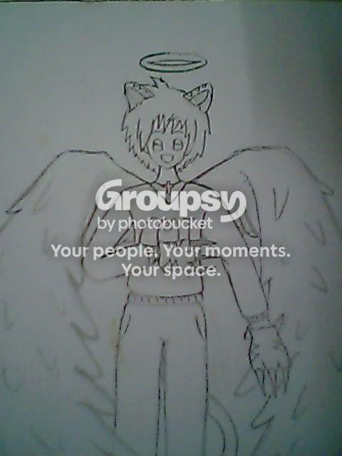

หน้า 5 จากทั้งหมด 12

โพสต์แล้ว:
พุธ 13 ก.พ. 2008 10:12 pmโดย ECO
-เครียดจัด- เขียน:รออยู่นะเร็วเข้า
รอไรหรอ
โพสต์แล้ว:
พุธ 13 ก.พ. 2008 10:24 pmโดย ECO
xiahjunsu เขียน:-เครียดจัด- เขียน:รออยู่นะเร็วเข้า
รอไรหรอ
ถามได้ก็รอนายอัพเดทนิยายต่อไง
โพสต์แล้ว:
พุธ 13 ก.พ. 2008 10:29 pmโดย ECO
อ้อ
ไว้หลังสอบเน้อ
พุทหน้าอ่ะนะรอกานหน่อย
ตอนนี้แต่งไม่ค่อยได้
ตัวละครไม่พอ
โพสต์แล้ว:
เสาร์ 16 ก.พ. 2008 9:15 pmโดย ECO
ตอนที่ 11 คำสาปคลายออก
อาคาโดะไม่เคยสังเกตเลยว่าตอนนี้ตนเอง Lv.52 แล้ว เหตุก็เพราะว่า Rafaeals ได้ถูกปลดปล่อยจากพลังอันน่าอัศจรรย์ของ Amethyst แล้ว
ทางด้าน Rafaeals & Amethyst นั้นก็อยู่ในบ้านหลังหนึ่งRafaeals – คุนเป็นไคกันแน่
Amethyst – ข้าก็เป็น Titania เช่นเดียวกัยท่านไง
Rafaeals – แล้วข้าล่ะ ข้าเป็นไค ท่านรู้ไหม
Amethyst – ฉันก็ไม่รู้หรอก
Rafaeals – แล้วท่านมาที่นี่ทำไมกัน
Amethyst – ข้าก็มาเพื่อช่วยท่านไง
Rafaeals – แล้วท่านรู้ได้ยังไงว่าข้าอยู่ที่นี่
Amethyst – ก็ที่นี่มันเป็นที่สุดท้ายไง ข้านะ ไปมาทั่วทั้งดินแดนแห่งนี้ ผจญภัยตามสถานที่ต่างเพื่ออกตามหาท่าน มาเป็นเวลา 4 ปีเต็ม
Rafaeals – แล้วทำไมข้าถึงจำอะไรไม่ได้เลย
Amethyst - อาจเป็นเพราะว่าท่าน หลับไปนานแล้วล่ะมั๊ง
Rafaeals – นานเท่าไร ?
Amethyst – 500 ปีเต็มๆ
Rafaeals – แต่ข้าไม่รู้สึกเช่นนั้น ข้ารู้สึกเหมือนวันนี้เป็นวันแรกที่ข้าเกิดมา และก็มีท่าน เป็นคนแรกที่ข้ารู้จัก ท่านอย่าทิ้งข้านะ
เมื่อ Amethyst ได้ฟังเช่นนี้ก็อดไม่ได้ที่จะรู้สึกดีๆกับ ชายผู้นี้ เพราะความใสซื่อ และ บริสุทธิ์ และยิ่งได้ยิน คำพูดที่ว่า “ท่านอย่าทิ้งข้านะ” ก็ทำให้ Amethyst ถึงกับ เขินหน้าแดงไปเลย
Amethyst – ได้สิ ข้าสัญญา ข้าจะไม่ทิ้งท่าน
แล้ว Amethyst ก็กุมมือของ Rafaeals เอาไว้เพื่อเป็นการแสดงคำสัญญา
Amethyst – เราไปในเมือง Northern City กันก่อนดีกว่า เพราะ ที่นี่อากาศหนาว และอันตรายมาก ขืนอยู่ที่นี่ต่อไปคงไม่ดีแน่ๆ
Rafaeals – อึม ท่านไปไหน ข้าจะไปกับท่าน
คำพูดของ Rafaeals นั้น ช่างมีพลังซะเหลือเกิน ซึ่งเค้าไม่รู้เลยว่า คำพูดของเค้า ทำให้สาวน้อยอย่างAmethyst นั้นเกิดอาการหวั่นไหว ขนาดไหน
ระหว่างทางเดินกลับเมือง
Rafaeals – ใช่สิ ข้าลืมถามไป ทำไมท่านถึงมาช่วยข้าล่ะ
Amethyst – มันเป็นคำสั่งของแม่ข้าน่ะ
Rafaeals – แล้วแม่ของท่าน รู้ได้ยังไง ว่าข้าอยู่ที่ดินแดนแห่งนี้
Amethyst – ไม่เพียงแต่ ข้า กับแม่ ที่รู้ว่าท่านอยู่ที่ดินแดนแห่งนี้ แต่ความจริง Titania ทุกๆคนรู้ว่าท่านอยู่ที่นี่ ในดินแดนแห่งนี้
Rafaeals – ท่านคงจะลำบากมากเลยสินะ
Amethyst – ไม่หรอก ไม่ซักนิด
Rafaeals – ขอบคุณมากเลยนะ (พูดเบาๆ)
แล้วทั้งคู่ก็เดินทางมาจนถึง Northorn Endless แถวนี้ มี Monster เก่งๆ เต็มไปหมด ถ้าไคไม่เก่งจิงล่ะก็ บอกคำเดียวว่า ตายแน่ๆ (ขนาด พระเวล 52 / 21 อย่างเรายังเกือบตาย)
+++ - Hrrrr !!!!!!!!!!!
พูดไม่ทันขาดคำเสียงอะไรนั่นน่ะ มาร่วมหาคำตอบกันใน ตอนหน้านะคับ
To be continue.
มีรูปมาฝาก
โพสต์แล้ว:
เสาร์ 16 ก.พ. 2008 9:43 pmโดย ECO
มันอาจจะไม่ค่อยสวย แต่เราก็ตั้งใจวาดนะ
Rafaeals ตอนแรก

Rafaeals Ver. น้อง MeW=^._.^=

Rafaeals & อาคาโดะ
พอใช้ได้ไหม
Re: มีรูปมาฝาก
โพสต์แล้ว:
เสาร์ 16 ก.พ. 2008 11:05 pmโดย ECO
xiahjunsu เขียน:มันอาจจะไม่ค่อยสวย แต่เราก็ตั้งใจวาดนะ
Rafaeals ตอนแรก
Rafaeals Ver. น้อง MeW=^._.^=
Rafaeals & อาคาโดะ
พอใช้ได้ไหม
ก็โอเค พอใช้ได้นะ แต่อยากให้ภาพมันชัดกว่านี้
.............................................................................................
ส่วนเรื่องนิยาย ก็โอเคค่ะ สนุกดี แต่ว่าอยากให้ใช้
ไค = ใคร จะดีกว่านะคะ
ขอโทษด้วยนะที่เรื่องมาก เราเป็นคนอ่านภาษาวิบัติไม่ค่อยออกเท่าไหร่
เวลามาอ่านเยอะมันแปลกน่ะ ตอนต่อไปช่วยแก้หน่อยแล้วกัน จะรอดูนะ
โพสต์แล้ว:
อาทิตย์ 17 ก.พ. 2008 8:15 pmโดย ECO
รูปน่าร้กดีจ้า แต่ใช้เครื่องแสกนถ่ายจะดีกว่าใช้กล้องนะ มันมองไม่ชัดจริงๆล่ะ...
ส่วนบทใหม่..ตายละ เรากำลังเริ่มมีความรักหรือนี่?? 555+
ป.ล.รู้สึกตะหงิดๆเล็กน้อย บทที่ผ่านมาสรรพนามแทนตัวมี ฉัน โผล่มาตัวเดียวในขณะที่ตัวอื่นเป็น ข้า หมด แก้ด้วยก็ดีนะคะ หุหุ~~
โพสต์แล้ว:
จันทร์ 18 ก.พ. 2008 3:28 pmโดย ECO
อ่า เข้ามาอ่านผลงานของนายแล้วนะ
เป็นกำลังใจให้สร้างงานดีๆต่อไป ^ ^
โพสต์แล้ว:
จันทร์ 18 ก.พ. 2008 7:26 pmโดย ECO
ขอบคุนนะสำหรับทุกคำติชม
เอาเป็นว่าจะแก้ไขนะคับ
มีภาพมาฝากอีกแว้ว
นี่ Amethyst กะ หมาน้อย

และ Amethyst & Rafaeals
ตอนต่อไปไว้หลังสอบนะคับ
โพสต์แล้ว:
จันทร์ 18 ก.พ. 2008 11:24 pmโดย ECO
xiahjunsu เขียน:ขอบคุนนะสำหรับทุกคำติชม
เอาเป็นว่าจะแก้ไขนะคับ
มีภาพมาฝากอีกแว้ว
นี่ Amethyst กะ หมาน้อย
และ Amethyst & Rafaeals
ตอนต่อไปไว้หลังสอบนะคับ
จะรอต่อไปนะ สวยดีค่ะ
เห็นด้วยกับเรปบนๆ สแกนจะชัดกว่าน่ะนะ
โพสต์แล้ว:
อังคาร 19 ก.พ. 2008 8:34 pmโดย ECO
ตอนที่ 12 พลังที่หลับใหล
Map Northorn Endless. นั้นมี Monster เก่งๆมากมาย เช่น Magician , Holy – Dark Feather , Cyclop , Polun , White Woof , Polar Bear เป็นต้น
Amethyst – เสียงอะไรน่ะ (คิดในใจ) วันนี้หมอกเยอะจัง ว่าไหม
Rafaels – ฉันไม่รู้หรอก เท่าที่ฉันจำได้ วันนี้เป็นวันแรก ที่ฉันลืมตามองดูโลก และฉันก็มีเธอ ... คนเดียว
Amethyst หน้าแดง
Rafaels – แล้วกว่าจะถึงเมืองอีกนานไหมคับ
Amethyst – ใกล้ๆนี้ล่ะจ๊ะ
+++ - Hrrrr!!!!!
และแล้วเจ้าของเสียงก็ปรากฏ กายขึ้น ท่ามกลาง หมอกหนาจัด แต่พอจะมองเห็นเพียงลางๆเท่านั้น
Amethyst – Rafaels ระวังน้าส์ หลบก่อนเร็ว
Rafaels – เธอนั่นแหละหลบไป ฉันจะไม่ยอมให้ไคมาทำร้ายเธอ ฉันสัญญา
Amethyst ไม่เคยรู้สึกใจเต้นรัว แบบนี้ มันไม่ใช่เพราะว่ากำลังกลัวแน่นอน
Amethyst – แต่เธอเพิ่งจะฟื้นนะ เธอไม่ไหวหรอก
+++ - Hrrrrrrrr!!!!!!!!!!!!!
Monster นั้น ใกล้ เข้ามาแล้ว
Amethyst - มันมาแล้วล่ะ หนีไปก่อนนะ
Rafaels – ไม่ล่ะ ฉันไม่หนีหรอก ฉันบอกแล้วว่าเธออยู่ที่ไหน ฉันก็จะอยู่ที่นั่นด้วย
อีกแล้ว Amethyst เกิดอาการณ์ ใจเต้น ตุบๆ ไม่เป็นจังหวะเลย
+++ - Hrrr!!!!!!!!
Monster ตัวนั้นคือ Cyclop 1 ตัว และ Magician 2 ตัว
Rafaels – พวกท่านอย่าทำอะไรพวกเราเลยนะ
+++ - Hrrr!!!! (Cyciop โจมตีใส่ Rafaels และ Amethyst)
Amethyst – Healing!! Healing!!
Rafaels – Amethyst ระวัง
+++ - Black Widow !! (Magician โจมตีใส่ Amethyst แต่ Rafaels มารับไว้)
Amethyst – เป็นไรไหม Rafaels ฉันขอโทษนะ Healing !!
Rafaels – แค่นี้เล็กน้อย ฉันจะไม่ยอมให้ใครมาทำอันตรายเธอ ฉันเคยบอกแล้วไง ตาฉันล่ะ
Rafaels วิ่งตรงไปที่ Magician กระดิงนิ้วทีเดียวเท่านั้น Magician ตัวนั้นก็ หายไปกลายเป็นเถ้าธุลี
Rafaels - ตาแก Holy Light!!!!!!!!!!!!!
คราวนี้ Rafaels ใช้ มนตร์ เพียงแค่ Holy Light ทำให้ Magician อีกตัว ตายไปเลย
Rafaels – สุดท้ายแก Holy Groove !!
ใช้มนตร์ Holy Groove ไถ Cycrop จนสลายหายไป กับแสงสว่าง
แล้ว Rafael ก็เดินมาที่ Amethyst
Amethyst – อย่านะ จะทำอะไรฉันน่ะ (Amethyst ตกใจกลัวมาก)
Rafaels – ไม่ต้องกลัวนะ ไม่มีไคทำร้ายเธอได้อีกแล้วล่ะ
เมื่อ Amethyst ได้ยินคำนี้ ก็ คลายความกังวล
Amethyst – เธอบาดเจ็บตรงไหนรึเปล่า
Rafaels – ไม่เลย ไม่ต้องเป็นห่วงนะ
Amethyst เริ่มเข้าใจแล้วว่าทำไม แม่ของเธอจึงให้เธอออกตามหา ชายผู้นี้
ว้า ทำไม Rafaels เก่งจังนะ ตอนต่อไปจะเป็นยังไง ทั้งคู่จะไปถึงเมืองอย่างปลอกภัยหรือไม่ ติดตามชมในตอนหน้านะคับ
To be continue.
โพสต์แล้ว:
อังคาร 19 ก.พ. 2008 8:38 pmโดย ECO
เราไม่มีเครื่องสแกนอ่ะ
อิๆ
โพสต์แล้ว:
อังคาร 19 ก.พ. 2008 9:41 pmโดย ECO

ชื่อ - มาโกะ
อายุ - 18
เพศ - หญิง
เผ่าพันธุ์ - Emil
อาชีพ - Swordman
นิสัย - แอ๊บแบ๊ว
ประวัติ - หญิงสาวคนหนึ่งที่ฝันอยากจะเป็น BladeMaster เคยลองเปลี่ยนอาชี่พครั้งหนึ่งแต่ก็ไม่สำเร็จจึงไปฝึกฝนตัวเองเรื่อยๆในเมืองเหนือ
*เคยเป็นรุ่นพี่ของ GinnySypia ตอนเรียนอยู่จากนั้นได้แยกทางกันไปเรียนวิชาอื่นต่างๆกันไป
โพสต์แล้ว:
อังคาร 19 ก.พ. 2008 11:17 pmโดย ECO
รีบๆแต่งต่อนะ
โหวตให้แล้วนะ แต่ไม่บอกว่าโหวตข้อไหน
โพสต์แล้ว:
พุธ 20 ก.พ. 2008 1:41 pmโดย ECO
สู้ๆจ้า รออ่านอยู่ หุหุ~
ขยันวาดจังเนอะ น่ารักดี ขอบใจนะที่วาดรูปเราด้วยอ่ะ อิอิ :P